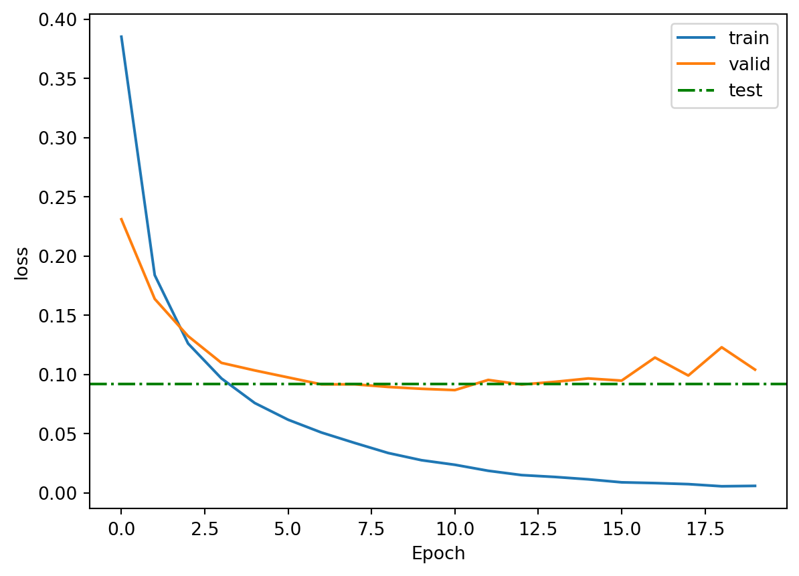

In the following we will focus on squared images of handwritten digits. They have also been annotated (labeled). For historical background see here: wikipedia
Examples from MNIST handwritten digits.
the challenge
highly structured data
data collection
human error rate
LeCun (Bell Labs, Facebook/Meta, Turing Award 2018)
Test and Training Sets
For models with many parameters there is a real danger of overfitting, i.e. learning the specifics of one set of samples rather than generalizable rules.
For performance evaluation it is crucial to retain an independent (but representative) test data set that it is never used for fitting. For MNIST we can obtain both train and test data from torchvision.dataset (63 MB)
Code
# define data transformation. toTensor() also includes division by 255! transform = transforms.Compose([transforms.ToTensor()]) full_train = datasets.MNIST(root='./data', train=True, download=True, transform=transform)test_data = datasets.MNIST(root='./data', train=False, download=True, transform=transform)
Data Transformations
Alert: Usually many more steps are necessary to prepare data for analysis: reading, reformating, filtering, shuffeling, transformation, normalization.
This can take up a significant amount of time and it is important to do so consistently for train and test data.
The transformation to pytorch tensor is minimal, but notice that this also includes an implicit normalization of images \([0, 255]\) (integer) \(\to [0,1]\) (float). This will be done automatically and systematically whenever we access full_train or test_data, but the data set still contains the row data.
Data Inspection
Code
def show_ascii_arr(arr):for row in arr:print(" ".join(f"{val:3d}"for val in row))# accessing all *unnormalized* dataX,y = full_train.data, full_train.targetsprint('full_train:', type(full_train))print('X:', type(X), X.shape, X.min(), X.max())print('y:', type(y), y.shape)# ... as asciishow_ascii_arr(X[0])# ... as grey-scale imageplt.imshow(X[0], cmap="grey")plt.title(y[0])plt.show()
A slightly more complicated scenario may occur if the classes (encoded by targets) are not well balanced.
In this case we need to ensure that the subsampled data respects those proportions, since the validation (and test) data should be representative This is called “stratification” and can be obtained with help of scikit-learn.
Below is a frequently used method from scikit-learn. It is shown here only for reference. But notice that it requires several conversions and normalizations that we’ll need track carefully.
Code
from sklearn.model_selection import train_test_splitfrom torch.utils.data import TensorDatasetfract =0.8# convert from tensors to numpyX = full_train.data.numpy()y = full_train.targets.numpy()# convenient implementation of stratificationX_train, X_val, y_train, y_val = train_test_split(X, y, train_size=fract, stratify=y)# convert back to tensorstrain_ds = TensorDataset(torch.tensor(X_train[:, None]/255., dtype=torch.float32), torch.tensor(y_train, dtype=torch.long))val_ds = TensorDataset(torch.tensor(X_val[:, None]/255., dtype=torch.float32), torch.tensor(y_val, dtype=torch.long))test_ds = TensorDataset(test_data.data[:, None]/255., test_data.targets)
Summary
In most machine learinng application we want to have a data split
Train-Validation-Test Split. The fractions shown are common, but arbitrary.
Goal Repeat
Build a predictor of labels for hand-written digits.
Code
from sklearn.decomposition import PCAn_sub =500# define a subset of digits for speed# flattening a tensor to get [samples x features]X_sub = full_train.data[:n_sub].flatten(start_dim=1)y_sub = full_train.targets[:n_sub]print('X: ', X_sub.shape)X_pca = PCA(n_components =2).fit_transform(X_sub)print('Scores: ',X_pca.shape)cm = plt.get_cmap('tab10')plt.scatter( X_pca[:,0], X_pca[:,1] , c=y_sub, cmap=cm)plt.title('PCA of MNIST')plt.colorbar()plt.show()
X: torch.Size([500, 784])
Scores: (500, 2)
Data Loading
Rather than accessing samples per index we frequently want to load batches of a certain sizes into memory for further analysis. Really large data sets may not even fit into memory, so it is useful to define DataLoaders that get data only in batches inot memory.
Code
train_loader = DataLoader(train_ds, batch_size=64, shuffle=True)val_loader = DataLoader(val_ds, batch_size=64)test_loader = DataLoader(test_data, batch_size=64)print("number of train_batches: ", len(train_loader))print("number of test_batches: ", len(test_loader))# Data Loaders are used a iterator - they return batches of X,y tuplesX,y =next(iter(train_loader))print('X batch: ', X.shape)print('y batch: ', y.shape)
number of train_batches: 750
number of test_batches: 157
X batch: torch.Size([64, 1, 28, 28])
y batch: torch.Size([64])
Define Model
Rectified Linear Unit
Basic Non-linearity
Code
class MNISTModel(nn.Module):def__init__(self):super().__init__()self.flatten = nn.Flatten()self.fc1 = nn.Linear(28*28, 128)self.fc2 = nn.Linear(128, 10)def forward(self, x): x =self.flatten(x) x =self.fc1(x) x = F.relu(x) logits =self.fc2(x)return logits
Code
model = MNISTModel().to(device)
Summarize Model
Code
from torchinfo import summarysummary(model, input_size=(1000, 1, 28, 28), device=device)
def plot_fit_history(hist, name='loss', test_score=None):if name notin hist:print(f"{name} not found in history")return plt.plot(hist[name], label='train') val_name ='val_'+ nameif val_name in hist: plt.plot(hist[val_name], label='valid')if test_score isnotNone: plt.axhline(test_score, color='green', linestyle='-.', label='test') plt.xlabel('Epoch') plt.ylabel(name) plt.legend() plt.show()plot_fit_history(hist, 'loss')
Repeat
In principle the steps can be repeated to improve the model (decrease the training loss) or to speedup the training.
increasing number of neurons or layers
work with regularization techniques or data augmentation
change learning algorithm or learning rate
adjust hyperparameters
! But never show the model the test data until the end !
Test Model
In principle we can test all test samples (10,000) at once. This is conceptually simpler, but it does requires more care with proper transformations (normalizations) which are run when accessing batches. So in this case we have to normalize by hand
Code
# notice that we need to normalize explicitlyX = test_data.data.to(device) /255.0y = test_data.targets.to(device)print(X.shape)with torch.no_grad(): all_logits = model(X) loss = loss_function(all_logits, y)all_true = y.detach().cpu()test_loss = loss.cpu() /len(X)plot_fit_history(hist, 'loss', test_loss)
torch.Size([10000, 28, 28])

… more commonly batches are also used over test samples, but this requires some collection
Code
# Evaluate on testmodel.eval()total_loss =0all_logits = []all_true = []with torch.no_grad():for xb, yb in test_loader: xb, yb = xb.to(device), yb.to(device) logits = model(xb) loss = loss_function(logits, yb)# collect total_loss, predicted logits and true labels yb total_loss += loss.item() all_logits.append(logits.cpu()) all_true.append(yb.cpu())test_loss = total_loss /len(test_loader.dataset) # mean test lossall_logits = torch.cat(all_logits)all_true = torch.cat(all_true)plot_fit_history(hist, 'loss', test_loss)
Repeat the above, but with the ReLU switch off. Tru to increase the number of nodes or layers
Reality check: scan your own handwritten digit and submit it to your trained model. Pay attention to proper normalization and black/white encoding. Does it work?
Load own image
Code
from PIL import Imageimport torchfrom torch.utils.data import TensorDatasetimg_size = test_data.data[0].shapejpg_path ="images/ANN_Digit3.jpg"# convert to greyscale (L=luminance)img = Image.open(jpg_path).convert("L").resize(img_size)img_tensor = transform(img) # transform to tensorimg_tensor =1- img_tensor # swap black and whiteimg_tensor = img_tensor.unsqueeze(0)print(img_tensor.shape)plt.imshow(img_tensor[0][0], cmap="grey")plt.show()
torch.Size([1, 1, 28, 28])
Code
import torch.nn.functional as F# predict logitslogits = model(img_tensor.to(device))print('logits = ', logits.detach().cpu().numpy())# convert to probabilitiesprobs = F.softmax(logits, dim=1).detach().cpu().numpy()[0]plt.figure(figsize=(8,4))plt.bar(range(10), probs)plt.xlabel("Digit")plt.ylabel("Probability")plt.xticks(range(10))plt.title("Model probabilities for each digit")plt.show()
Consistent use of Data Transformation & Data Loading
Train-Validation-Test split (with balancing)
Importance of non-linearity (\(\to\) RELU)
repetiton: model definition and parameter count
Source Code
---title: Image Classificationjupyter: pytorch---## GoalGiven many images and their labels, train a neural network to predict the label of a new image (c.f human learning).## Repetitions- Define Model & Optimization Strategy- Fit Model- Monitor Fitting- Evaluate Training ## New items- Data Splitting: Train & Test- How to handle images: data structure## Get Packages```{python}#| label: get_packagesimport numpy as npimport torchimport torch.nn as nnimport torch.nn.functional as Ffrom torchvision import datasets, transformsfrom torch.utils.data import DataLoader, random_split, Subsetfrom sklearn.metrics import confusion_matrixfrom sklearn.model_selection import train_test_splitimport matplotlib.pyplot as pltfrom PIL import Imageimport osfrom lecture_utils.helper import plot_cm, detect_devicedevice = detect_device()print('torch-version: ', torch.__version__)print('device: ', device)```::: callout-tip### Use GPU if available- Google Colab: $\to$ Change Runtime ...- Kaggle: $\to$ Accelerator (GPU T4):::## Get Data: MNIST### BackgroundMany famous datasets can be found here:- [@pytorch datasets](https://docs.pytorch.org/vision/main/datasets.html){target="_blank"}- [@keras datasets](https://keras.io/api/datasets){target="_blank"}In the following we will focus on squared images of handwritten digits. They have also been annotated (labeled). For historical background see here: [wikipedia](https://en.wikipedia.org/wiki/MNIST_database){target="_blank"}{target="_blank"}- the challenge- highly structured data- data collection- human error rate- LeCun (Bell Labs, Facebook/Meta, Turing Award 2018)### Test and Training SetsFor models with many parameters there is a real danger of **overfitting**, i.e. learning the specifics of one set of samples rather than generalizable rules.For performance evaluation it is crucial to retain an independent (but representative) **test data set** that it is never used for fitting. For MNIST we can obtain both train and test data from torchvision.dataset (63 MB)```{python}#| label: get_data# define data transformation. toTensor() also includes division by 255! transform = transforms.Compose([transforms.ToTensor()]) full_train = datasets.MNIST(root='./data', train=True, download=True, transform=transform)test_data = datasets.MNIST(root='./data', train=False, download=True, transform=transform)```### Data Transformations**Alert:** Usually many more steps are necessary to prepare data for analysis:reading, reformating, filtering, shuffeling, transformation, normalization. This can take up a significant amount of time and it is important to do so consistently for train and test data.The transformation to pytorch tensor is minimal, but notice that this also includes an implicitnormalization of images $[0, 255]$ (integer) $\to [0,1]$ (float). This will be done automaticallyand systematically whenever we access `full_train` or `test_data`, but the data set still contains the row data.### Data Inspection```{python}#| label: data_explorationdef show_ascii_arr(arr):for row in arr:print(" ".join(f"{val:3d}"for val in row))# accessing all *unnormalized* dataX,y = full_train.data, full_train.targetsprint('full_train:', type(full_train))print('X:', type(X), X.shape, X.min(), X.max())print('y:', type(y), y.shape)# ... as asciishow_ascii_arr(X[0])# ... as grey-scale imageplt.imshow(X[0], cmap="grey")plt.title(y[0])plt.show()```::: callout-important#### QuestionHow many samples and how many features does the MNIST training set have?:::Notice: usually we access only subsets (by index or DataLoader) those will be transformed as specified in transform()```{python}#| label: normalized_dataX,y = full_train[0]plt.imshow(X[0], cmap="grey")title=f"label={y} (min={X.min()}, max={X.max()})"plt.title(title)plt.show()```Above we obtained train and test directly with `torchvision.datasets`. But sometimes we need addtional subsets from the train data (e.g. *validation data*)This can be done as follows```{python}#| label: validation_splitfrom torch.utils.data import random_split# keep 80% for trainingfract =0.8# define lengthstrain_len =int(fract *len(full_train))val_len =len(full_train) - train_len# define splittrain_ds, val_ds = random_split(full_train, [train_len, val_len])# Inspectprint('train:', len(train_ds))print('val:', len(val_ds))X, y = val_ds[0]print('X:', X.shape, y)```### Stratified samplingA slightly more complicated scenario may occur if the classes (encoded by targets) are not well balanced. In this case we need to ensure that the subsampled data respects those proportions,since the validation (and test) data should be representative This is called "stratification" and can be obtained with help of scikit-learn.See here for stratified partitioning:[StratifiedShuffleSplit()](https://scikit-learn.org/stable/modules/generated/sklearn.model_selection.StratifiedShuffleSplit.html){target="_blank"}```{python}#| label: stratified_splitfrom sklearn.model_selection import StratifiedShuffleSplitfrom torch.utils.data import Subset# Use targets directly from datasettargets = full_train.targets.numpy()sss = StratifiedShuffleSplit(n_splits=1, train_size=fract, random_state=42)# sss.split() returns an iteratortrain_idx, val_idx =next(sss.split(np.zeros(len(targets)), targets))train_ds = Subset(full_train, train_idx)val_ds = Subset(full_train, val_idx)print('train:', len(train_ds))print('val:', len(val_ds))# Sanity check - label frequenciestrain_labels = train_ds.dataset.targets[train_ds.indices]train_counts = torch.bincount(train_labels)train_freq = train_counts / train_counts.sum()val_labels = val_ds.dataset.targets[val_ds.indices]val_counts = torch.bincount(val_labels)val_freq = val_counts / val_counts.sum()print(train_freq)print(val_freq)```### `train_test_split` alternativeBelow is a frequently used method from scikit-learn. It is shown here only for reference. But notice that it requires several conversions and normalizations that we'll need track carefully.```{python}#| label: sklearn_train_test_split#| eval: falsefrom sklearn.model_selection import train_test_splitfrom torch.utils.data import TensorDatasetfract =0.8# convert from tensors to numpyX = full_train.data.numpy()y = full_train.targets.numpy()# convenient implementation of stratificationX_train, X_val, y_train, y_val = train_test_split(X, y, train_size=fract, stratify=y)# convert back to tensorstrain_ds = TensorDataset(torch.tensor(X_train[:, None]/255., dtype=torch.float32), torch.tensor(y_train, dtype=torch.long))val_ds = TensorDataset(torch.tensor(X_val[:, None]/255., dtype=torch.float32), torch.tensor(y_val, dtype=torch.long))test_ds = TensorDataset(test_data.data[:, None]/255., test_data.targets)```### SummaryIn most machine learinng application we want to have a data split ### Goal RepeatBuild a predictor of labels for hand-written digits.```{python}#| label: PCAfrom sklearn.decomposition import PCAn_sub =500# define a subset of digits for speed# flattening a tensor to get [samples x features]X_sub = full_train.data[:n_sub].flatten(start_dim=1)y_sub = full_train.targets[:n_sub]print('X: ', X_sub.shape)X_pca = PCA(n_components =2).fit_transform(X_sub)print('Scores: ',X_pca.shape)cm = plt.get_cmap('tab10')plt.scatter( X_pca[:,0], X_pca[:,1] , c=y_sub, cmap=cm)plt.title('PCA of MNIST')plt.colorbar()plt.show()```## Data LoadingRather than accessing samples per index we frequently want to load batches of a certain sizesinto memory for further analysis. Really large data sets may not even fit into memory, so it is usefulto define `DataLoaders` that get data only in batches inot memory.```{python}#| label: data_loadertrain_loader = DataLoader(train_ds, batch_size=64, shuffle=True)val_loader = DataLoader(val_ds, batch_size=64)test_loader = DataLoader(test_data, batch_size=64)print("number of train_batches: ", len(train_loader))print("number of test_batches: ", len(test_loader))# Data Loaders are used a iterator - they return batches of X,y tuplesX,y =next(iter(train_loader))print('X batch: ', X.shape)print('y batch: ', y.shape)```## Define Model### Rectified Linear UnitBasic Non-linearity```{python}#| label: model_defineclass MNISTModel(nn.Module):def__init__(self):super().__init__()self.flatten = nn.Flatten()self.fc1 = nn.Linear(28*28, 128)self.fc2 = nn.Linear(128, 10)def forward(self, x): x =self.flatten(x) x =self.fc1(x) x = F.relu(x) logits =self.fc2(x)return logits``````{python}#| label: model_createmodel = MNISTModel().to(device)```## Summarize Model```{python}#| label: model_summaryfrom torchinfo import summarysummary(model, input_size=(1000, 1, 28, 28), device=device)```## Define Loss Function and Optimizer### Adam OptimizerReference: DP Kingma et al. 2014. Adam: A method for Stochasitic Optimization. 200k+ citations !!!Don't get stuck in local minima $\to$ adaptive learning rates```{python}#| label: loss_optimizer# return sum losses over batchloss_function = nn.CrossEntropyLoss(reduction="sum") optimizer = torch.optim.Adam(model.parameters())```## Train Model```{python}#| label: train_modeldef train_model(model, train_loader, val_loader, epochs=25): history = {'loss': [], 'val_loss': []}for epoch inrange(epochs):# training model.train() total_loss =0# loop over all train data (in batches given by train_loader)for xb, yb in train_loader: xb, yb = xb.to(device), yb.to(device) logits = model(xb) loss = loss_function(logits, yb) # total loss for batch optimizer.zero_grad() # set gradients to 0 loss.backward() # calculate gradients with backprop optimizer.step() # parameter update total_loss += loss.item() # cumulative loss over all batches# average train_loss per sample train_loss = total_loss /len(train_loader.dataset)# Validation model.eval() total_loss =0# switch off gradient calculationwith torch.no_grad():for xb, yb in val_loader: xb, yb = xb.to(device), yb.to(device) logits = model(xb) loss = loss_function(logits, yb) total_loss += loss.item() val_loss = total_loss /len(val_loader.dataset) history['loss'].append(train_loss) history['val_loss'].append(val_loss)print(f"Epoch {epoch+1}: train_loss={train_loss:.4f}, val_loss={val_loss:.4f}")return historyhist = train_model(model, train_loader, val_loader, epochs=20)```## Save Model```{python}#| label: save_modeloutdir ="output"os.makedirs(outdir, exist_ok=True)torch.save(model.state_dict(), f'{outdir}/mnist_model.pt')torch.save(hist, f"{outdir}/mnist_history.pt")```## Load Model```{python}#| label: load_modeloutdir ="output"model = MNISTModel().to(device)tdict = torch.load(f"{outdir}/mnist_model.pt", map_location=device)model.load_state_dict(tdict)hist = torch.load(f"{outdir}/mnist_history.pt")```## Evaluate Training```{python}#| label: evaluate_trainingdef plot_fit_history(hist, name='loss', test_score=None):if name notin hist:print(f"{name} not found in history")return plt.plot(hist[name], label='train') val_name ='val_'+ nameif val_name in hist: plt.plot(hist[val_name], label='valid')if test_score isnotNone: plt.axhline(test_score, color='green', linestyle='-.', label='test') plt.xlabel('Epoch') plt.ylabel(name) plt.legend() plt.show()plot_fit_history(hist, 'loss')```::: callout-important#### RepeatIn principle the steps can be repeated to improve the model(decrease the training loss) or to speedup the training.- increasing number of neurons or layers- work with regularization techniques or data augmentation- change learning algorithm or learning rate- adjust hyperparameters! But never show the model the test data until the end !:::## Test ModelIn principle we can test all test samples (10,000) at once.This is conceptually simpler, but it does requires more care with proper transformations (normalizations)which are run when accessing batches. So in this case we have to normalize by hand```{python}#| label: test_all# notice that we need to normalize explicitlyX = test_data.data.to(device) /255.0y = test_data.targets.to(device)print(X.shape)with torch.no_grad(): all_logits = model(X) loss = loss_function(all_logits, y)all_true = y.detach().cpu()test_loss = loss.cpu() /len(X)plot_fit_history(hist, 'loss', test_loss)```... more commonly batches are also used over test samples, but this requires somecollection```{python}#| label: test_batches#| eval: false# Evaluate on testmodel.eval()total_loss =0all_logits = []all_true = []with torch.no_grad():for xb, yb in test_loader: xb, yb = xb.to(device), yb.to(device) logits = model(xb) loss = loss_function(logits, yb)# collect total_loss, predicted logits and true labels yb total_loss += loss.item() all_logits.append(logits.cpu()) all_true.append(yb.cpu())test_loss = total_loss /len(test_loader.dataset) # mean test lossall_logits = torch.cat(all_logits)all_true = torch.cat(all_true)plot_fit_history(hist, 'loss', test_loss)``````{python}#| label: confusion_matrixall_preds = all_logits.argmax(dim=1).detach().cpu()cm = confusion_matrix(all_true.numpy(), all_preds.numpy())#print(cm)plot_cm(cm)```## Task for home- Repeat the above, but with the ReLU switch off. Tru to increase the number of nodes or layers- Reality check: scan your own handwritten digit and submit it to your trained model. Pay attention to proper normalization and black/white encoding. Does it work?## Load own image```{python}#| label: load_own_imagefrom PIL import Imageimport torchfrom torch.utils.data import TensorDatasetimg_size = test_data.data[0].shapejpg_path ="images/ANN_Digit3.jpg"# convert to greyscale (L=luminance)img = Image.open(jpg_path).convert("L").resize(img_size)img_tensor = transform(img) # transform to tensorimg_tensor =1- img_tensor # swap black and whiteimg_tensor = img_tensor.unsqueeze(0)print(img_tensor.shape)plt.imshow(img_tensor[0][0], cmap="grey")plt.show()``````{python}#| label: predict_own_imageimport torch.nn.functional as F# predict logitslogits = model(img_tensor.to(device))print('logits = ', logits.detach().cpu().numpy())# convert to probabilitiesprobs = F.softmax(logits, dim=1).detach().cpu().numpy()[0]plt.figure(figsize=(8,4))plt.bar(range(10), probs)plt.xlabel("Digit")plt.ylabel("Probability")plt.xticks(range(10))plt.title("Model probabilities for each digit")plt.show()```## Summary- new data: images as flattened feature vectors- highly structured data (unrealistic)- Consistent use of Data Transformation & Data Loading- Train-Validation-Test split (with balancing)- Importance of non-linearity ($\to$ RELU)- repetiton: model definition and parameter count